Nasce a Marinara
Molho de tomate, orégano e azeite. A primeira pizza napoletana da história, até hoje uma das mais consumidas em Napoli.
Marinara · R$62
ReservarUltim'ora
Notícia com estilo é tudo.
Massa napoletana assada em forno a 430 graus, numa vila charmosa no Itaim Bibi. De terça a domingo, das 18h à meia-noite.
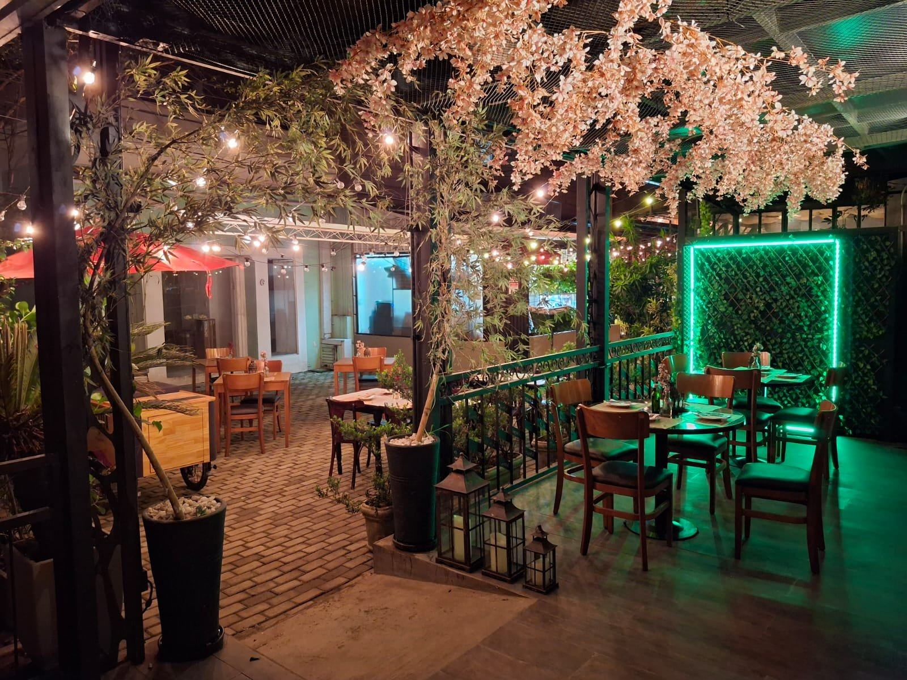
Espaço externo · Jardim Aurelia
Uma villa no Itaim,
ao ar livre.
Quando surgiu a ideia da Pizzaria Notizia, já a associamos ao jornal impresso. Imaginem conosco a notícia como uma autêntica pizzaria napoletana.
A notícia vem dos fatos reais e, para ser contada, precisa ser bem elaborada, clara e objetiva. Da mesma forma, a pizza é cuidadosamente preparada com os melhores e mais frescos ingredientes para ser apreciada.
Como um jornal que traz as últimas informações do dia, nossa pizzaria traz as melhores combinações de ingredientes frescos e sabores irresistíveis, que noticiam a experiência da mistura única entre a tradição italiana e a paixão brasileira.
“Cada pizza é uma verdadeira manchete gastronômica a ser compartilhada e celebrada.”
Nada mais importante do que a tradição e a autenticidade como ingredientes para compor uma bella pizza e também uma boa notícia. Aliás, ambas têm o poder de unir as pessoas.
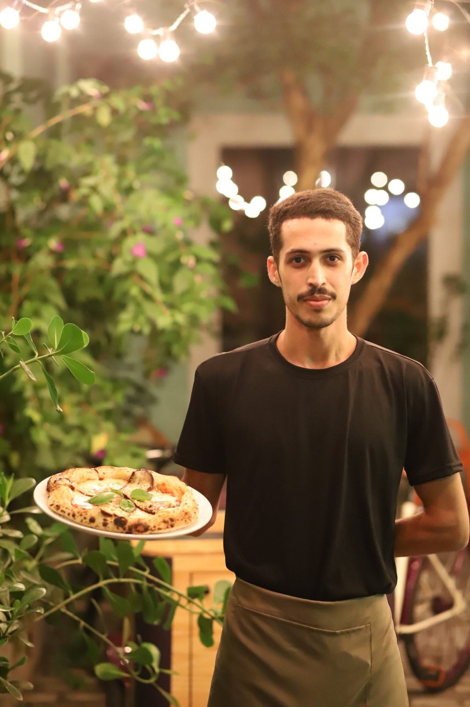
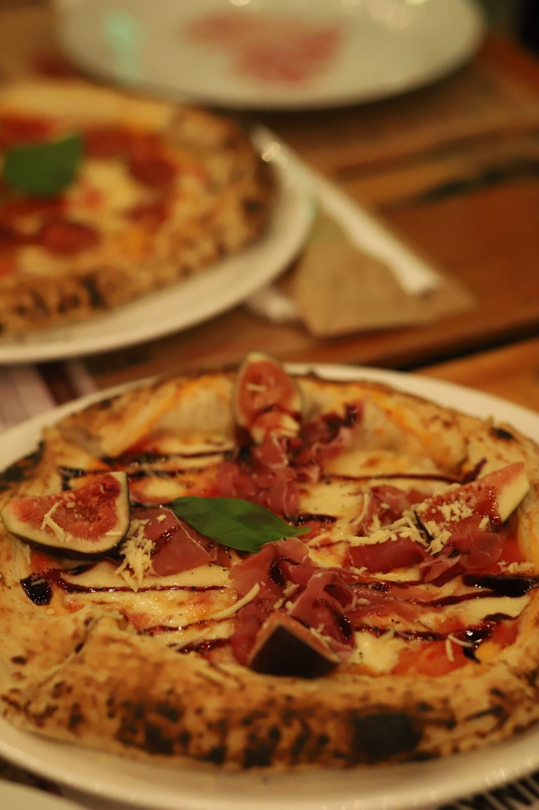
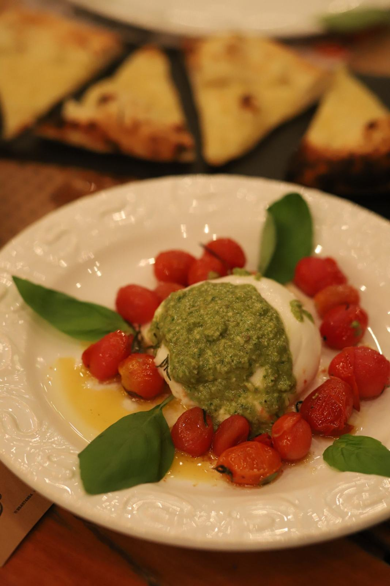
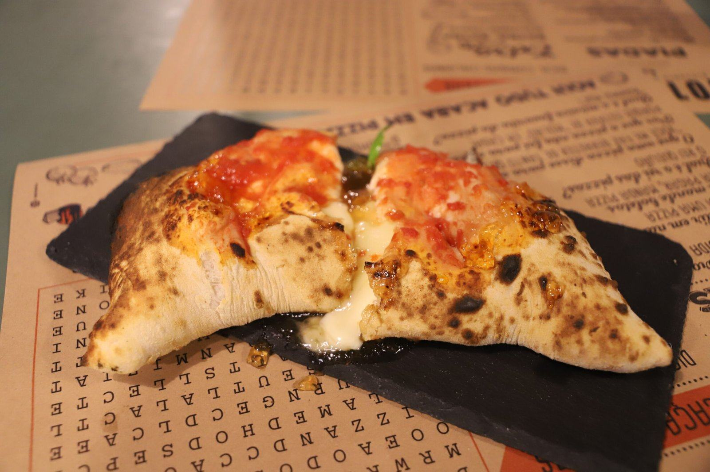
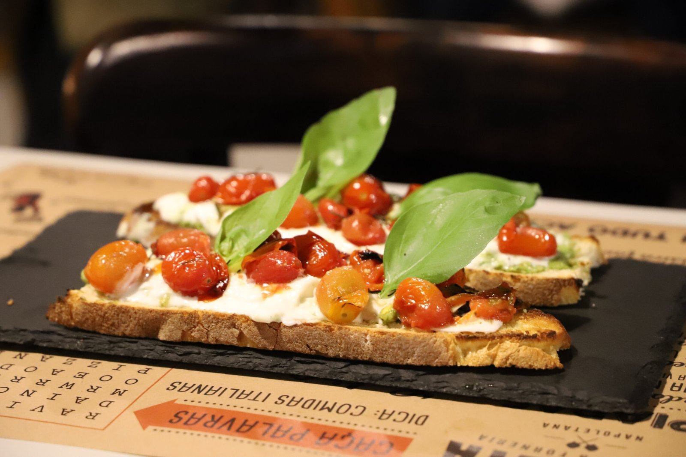
p. 3 · Pizzas assadas em forno a
A borda cresce, o fundo pinta, o basilico perfuma. É assim que a napoletana vira manchete.
p. 5 · Arquivo histórico
role para folhear →
Molho de tomate, orégano e azeite. A primeira pizza napoletana da história, até hoje uma das mais consumidas em Napoli.
Marinara · R$62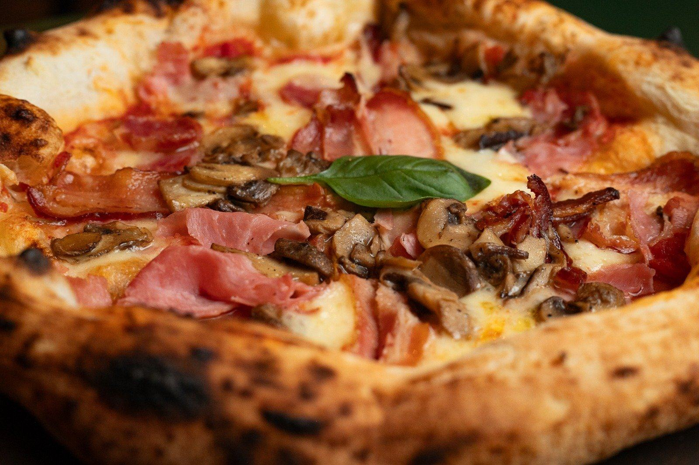
O pizzaiolo Rafaelle Esposito cria a Margherita em homenagem à rainha Margherita di Savoia. Tomate, mozzarella e basilico: as cores da bandeira da Itália.
Marguerita · R$64Produzido há mais de 2000 anos, o Prosciutto di Parma passa a ser protegido pelo Consorzio. Vem com figo, balsâmico e pimenta preta.
Parma · R$76Inspirada nas pizzas italianas, a Quattro Formaggi nasce aqui, com uma variedade de queijos para agradar os paladares mais exigentes.
Quattro formaggi · R$70Criada em São Paulo, na região do Bixiga, inspirada nos tradicionais salames italianos.
Calabresa · R$64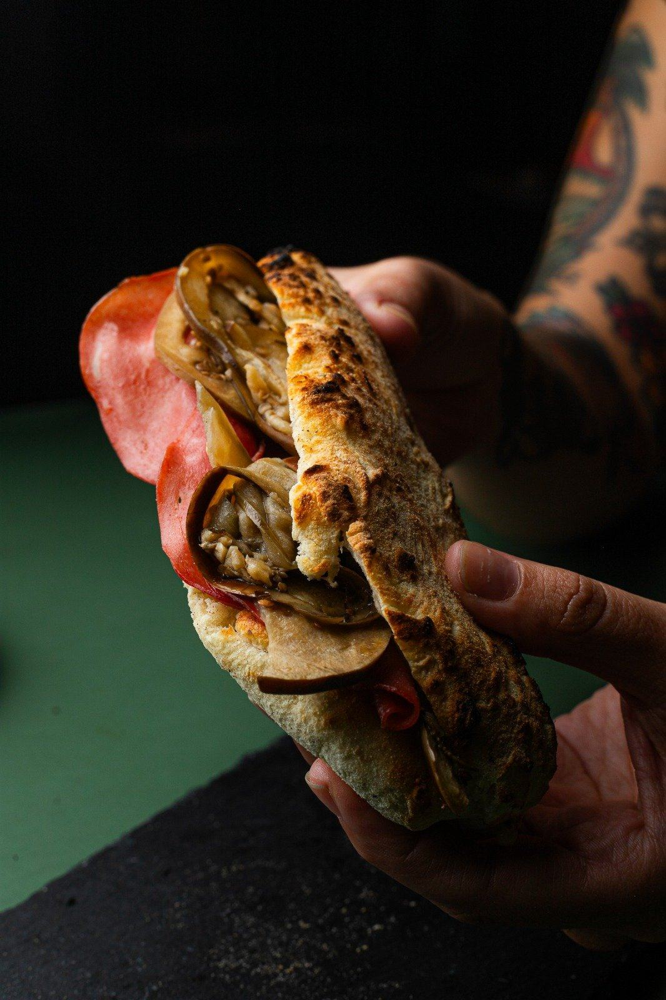
Rua Tabapuã, 838, casa 5. Terça a domingo, das 18h à meia-noite.
Reservar mesap. 6 · Ambientes
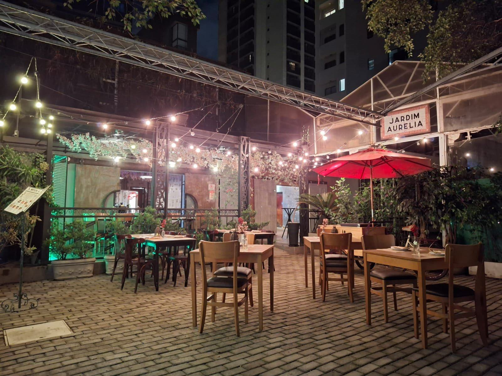
Espaço externo. Uma villa no Itaim, ao ar livre, com varal de luzes e flores no teto.
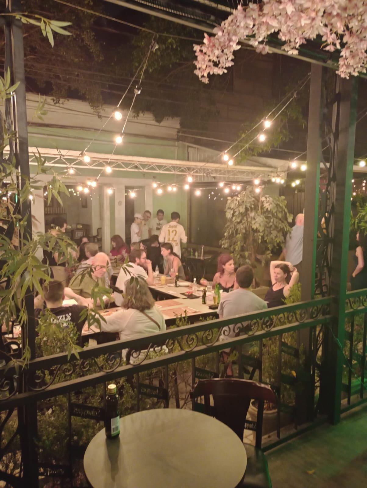
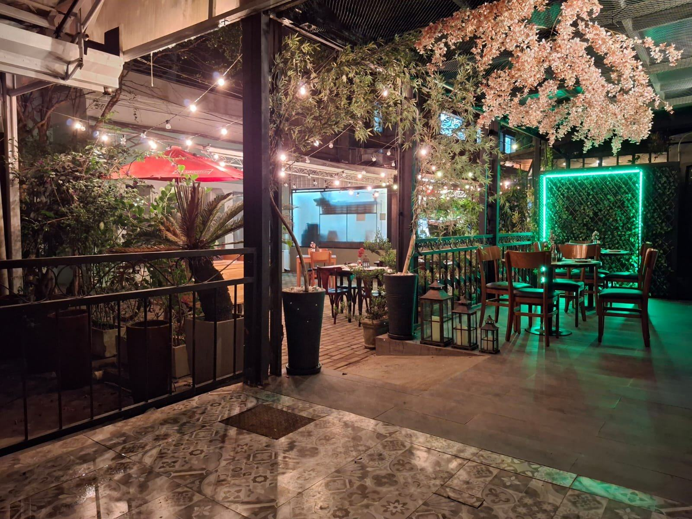
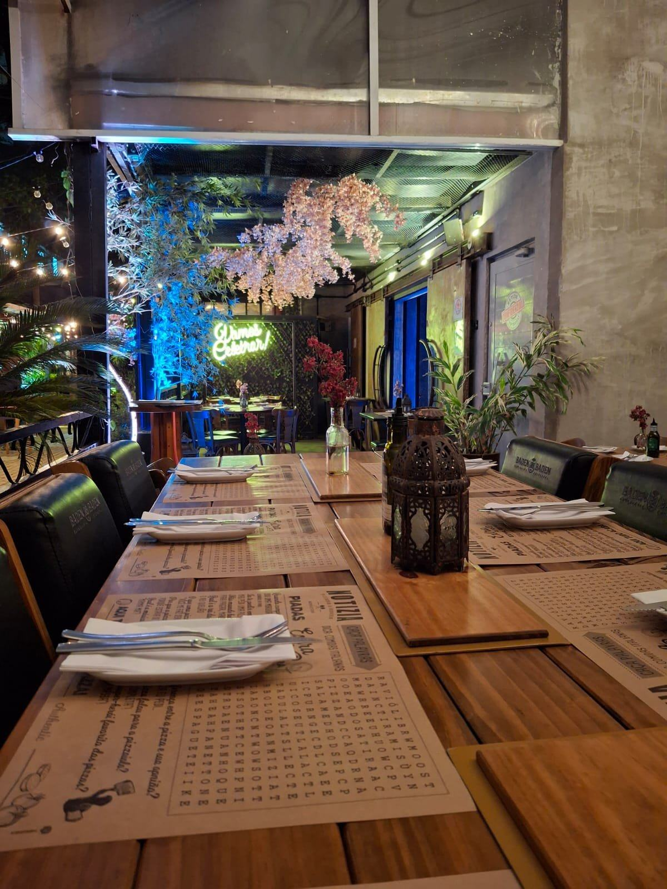
Salão coberto, mesas de madeira, flores suspensas. Pra jantar sem pressa.
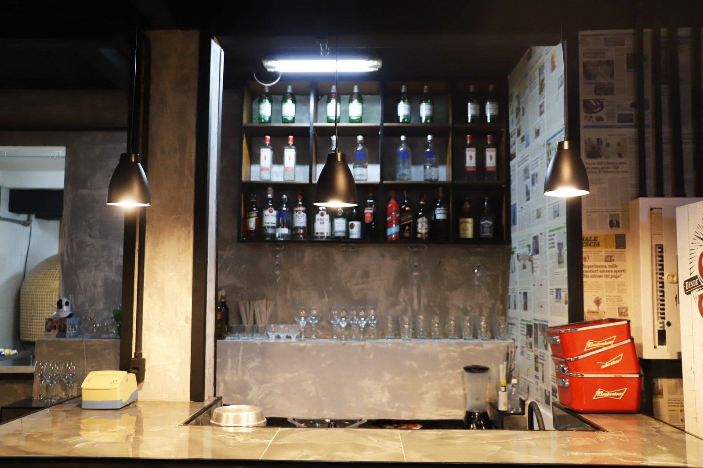
Negroni, Aperol, Moscow Mule, gin tônica e as jarras de sangria que fizeram fama.
ver drinks →Igual ao jogo americano que chega na sua mesa: encontre as palavras escondidas enquanto a pizza não sai do forno. Arraste de uma letra até a outra.
p. 9 · Serviços
Corporativo, social ou casa fechada só pra você. Conta pra gente o que você imagina e a equipe responde no WhatsApp.
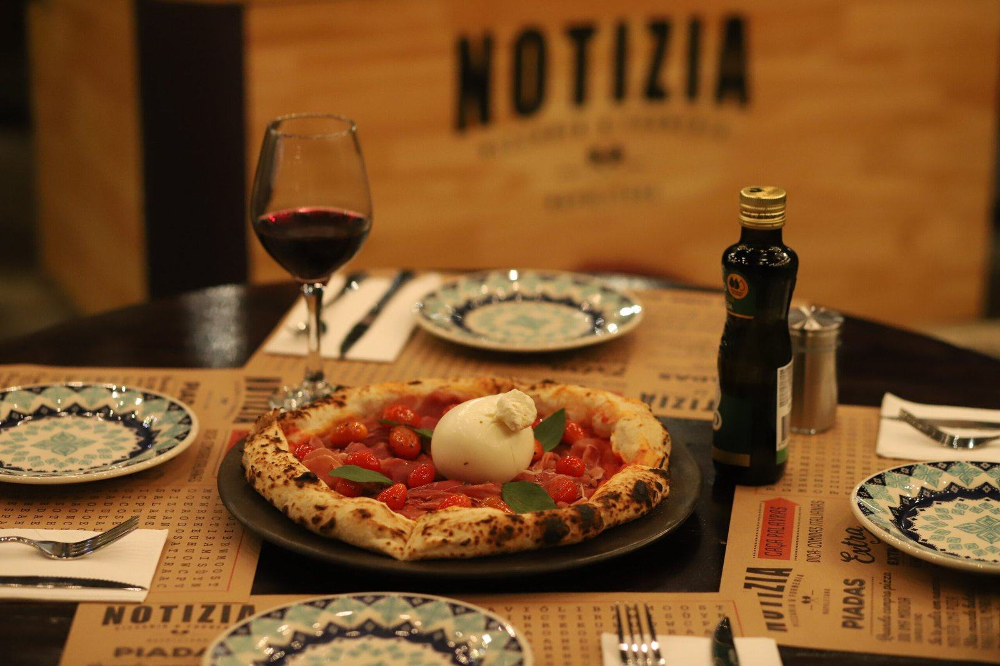
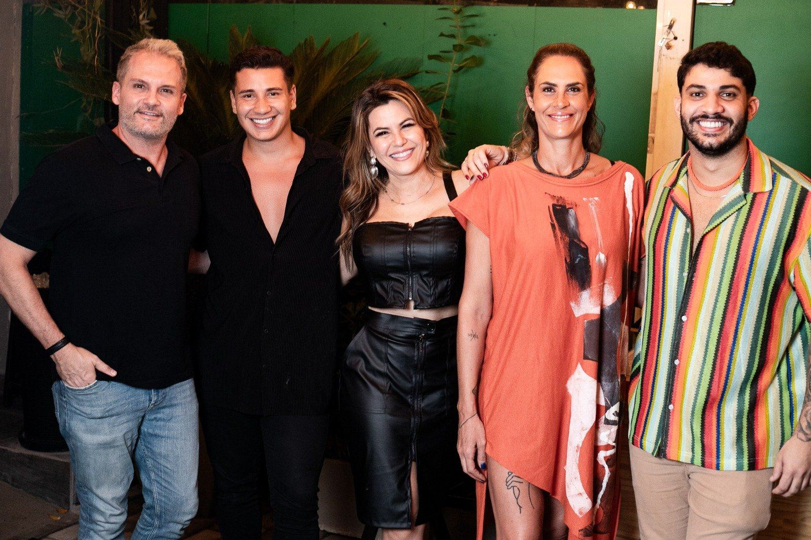
Famosos curtem noite agradável na Pizzaria Notizia
Dentre eles estavam Aritana Maroni, Tania Oliveira, Jamm, Apolo e Lhuis Mattos.
Um grupo de famosos curtiu uma noite especial na Notizia, considerada a melhor pizza napoletana de São Paulo, localizada em uma vila charmosa no Itaim Bibi.
Pizzas, drinks e jarras de sangria. Os convidados elogiaram a qualidade das pizzas, preparadas com produtos de primeira, o atendimento impecável e o lugar: o cenário perfeito para encontros entre amigos, em um ambiente familiar e altamente instagramável.